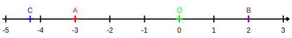
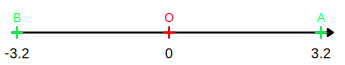

Activité Introduction
Voici une carte de prévision météorologique.
-
- A priori, à quelle saison les températures prévues correspondent-elles ?
- Quelle est la température la plus basse ?
La température la plus haute ?
- Classer ces températures en deux catégories en justifiant le choix des catégories.
-
Placer ces températures sur la droite graduée puis placer l'initiale de chaque ville de la carte en fonction de la température prévue.
(P pour Paris, N pour Nice, ...)
-
- Quelle est la différence de températures prévue entre Paris et Marseille ? Entre Nice et Marseille ?
- Comment cela se traduit-il sur la droite graduée les points P et N ?
-
Où fera-t-il le plus chaud :
- À Strasbourg ou à Lille ?
- À Dijon ou à Brest ?
- À Dijon ou à Paris ?
- En utilisant ce qui vient d'être fait, indique le plus grand des deux nombres :
- -12 et -7
- -9 et 2
- -9 et -4
- Ranger les températures de la plus froide à la plus chaude.

Les nombres relatifs :
Les nombres positifs sont les nombres supérieurs ou égaux à zéro. Ils s'écrivent seul ou avec le signe « + » placé devant eux.
Exemples :
2 ; 7 ; 3,5 ; +4 ; +6 ; +31,62 ; 2024 ; etc...
Les nombres négatifs sont les nombres inférieurs ou égaux à zéro. Ils s'écrivent avec le signe « - » placé devant eux.
Exemples :
-8 ; -17 ; -6,3 ; -42,72 ; -2025 ; etc...
Remarque :
-
Le nombre 0 est à la fois négatif et positif.
Les nombres relatifs regroupent les nombres positifs et négatifs.
Représentation :
Une droite graduée de façon régulière est une droite qui possède un sens, une origine et une unité de longueur.
Propriété :
Sur la droite graduée, chaque point est repéré par un nombre relatif unique appelé l'abscisse de ce point.
Exemples :
-
Le point B a pour abscisse +2.
On note : B(+2).
-
Le point C a pour abscisse -4,3.
On note : C(-4,3).

La distance à zéro d'un point sur la droite graduée est la distance entre l'origine et ce point.
Remarque :
- La distance à zéro est toujours positive.
L'opposé d'un nombre est le nombre ayant le signe opposé et la même distance à zéro.
Exemple :
-3,2 et l'opposé de +3,2.
